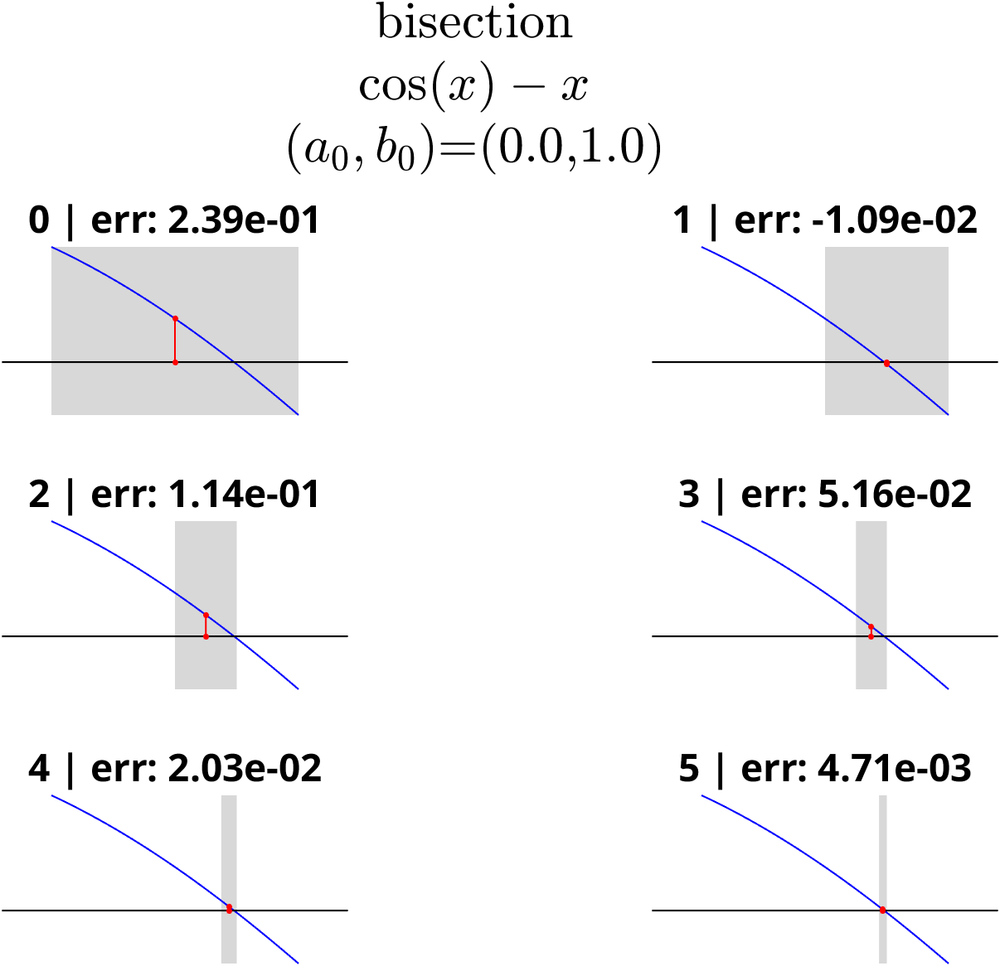
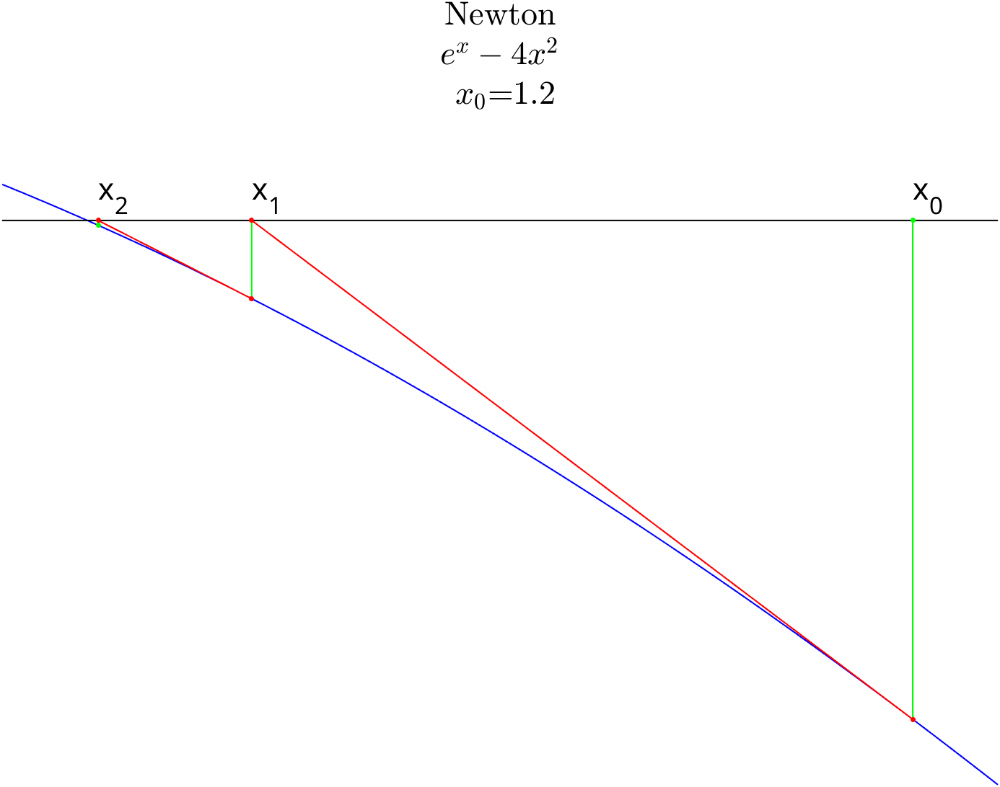
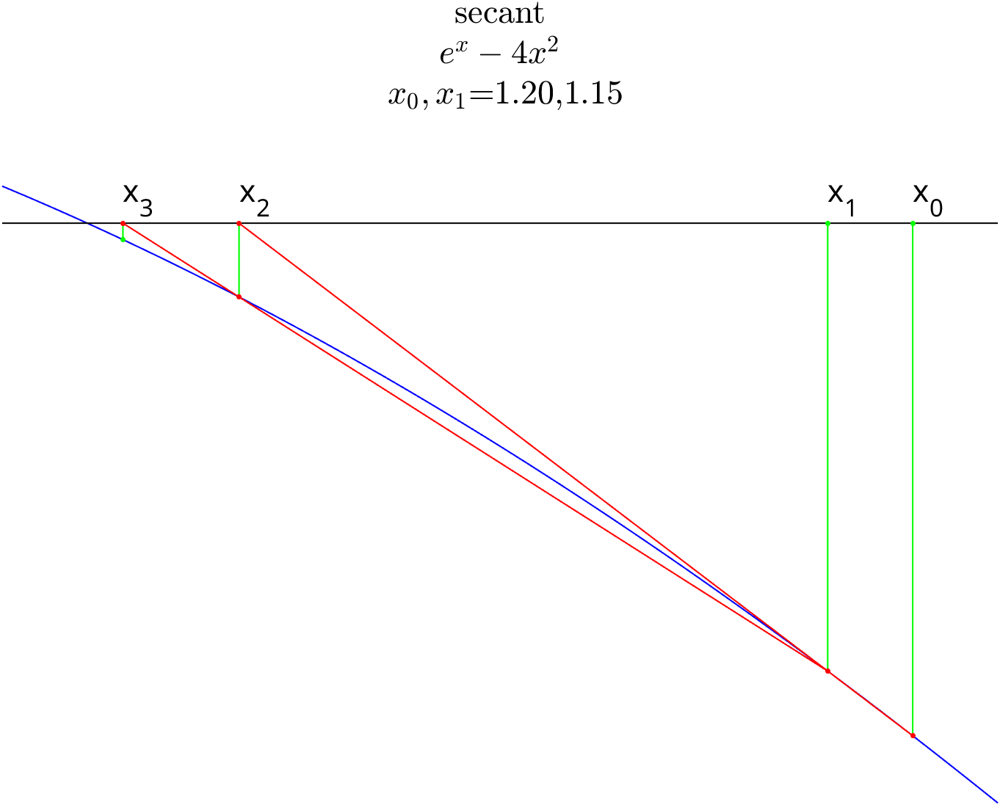
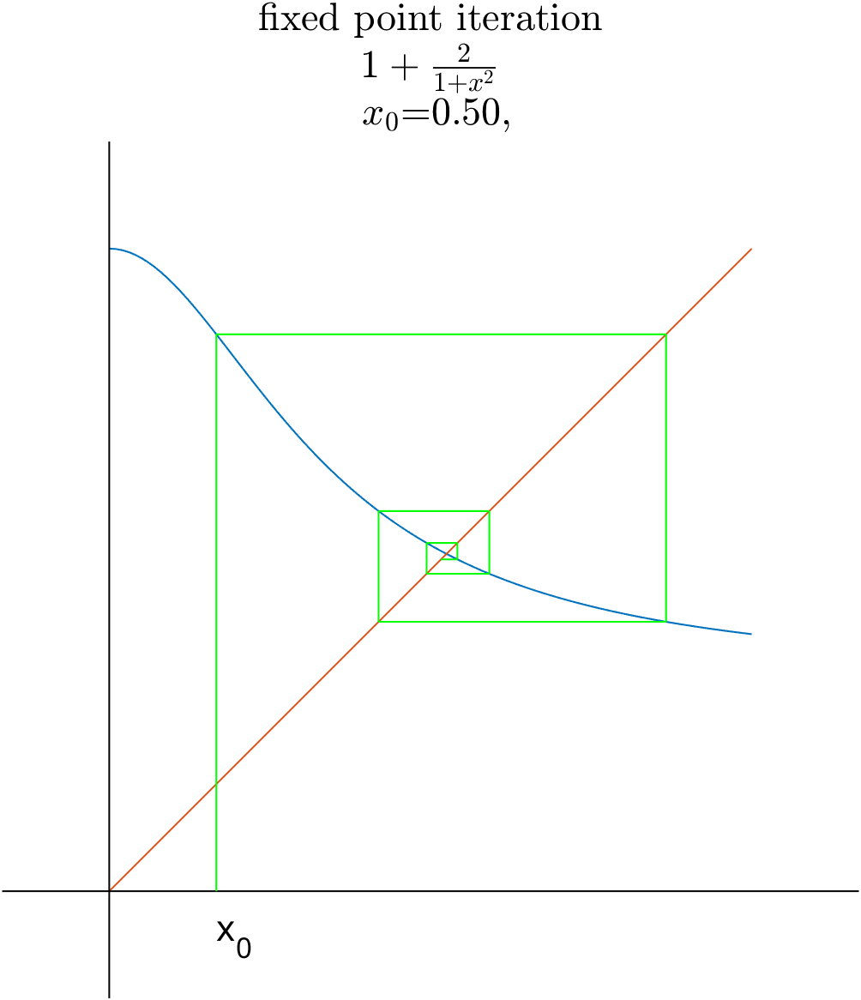

nonlin/concepts
April 7, 2026
intro
- we search for the solutions of the f(x)=0 equation, where f:{\mathbb R}\to {\mathbb R} is a
nonlinearfunction. - the solutions called roots or zeroes of f
- usually we are focusing to some [a,b]\subset \mathbb{R}
- examples:
example nonlinear functions
\begin{gather*} \cos(x)-x=0\\ x^5-3x^4+x^3-5x^2+3=0\\ e^x-4x^2=0\\ \log(x)-x+2=0\\ \end{gather*}
method of bisection

- start with an interval [a,b] for which f(a)f(b)<0
- set m=\frac{a+b}{2}
- update the endpoints of the interval by comparing f(m) with the old values. If f(a)f(m)<0 then set a,b=a,m otherwise set a,b=m,b.
- goto 1.
- this way f(a)f(b)\le 0 remains true for each interval.
- the function f:[a,b]\to {\mathbb R} is continuous
- f(a)\cdot f(b)<0 - f has different sign values at the endpoints of [a,b].
it follows that the equation f(x)=0 has at least one solution in (a,b).
- interval based iteration/bracketing method
- f:[a,b]\to \mathbb{R}
- [a_0,b_0]=[a,b]
- if one considers the midpoint x_k of the k-th interval as an estimator for the root \hat{x} of f, then
\begin{gather*} |x_{k}-\hat{x}|\le \frac{b_0-a_0}{2^{k+1}}\\ \end{gather*}
- if one considers the length of the k-th interval (\text{error}_{k}) as an error/uncertainty of estimation for the root \hat{x} of f, then
\begin{gather*} \text{error}_{k} \le \frac{1}{2}\ \text{error}_{k-1} \end{gather*}
- it is a 1-st order method.
% sample implementation of the bisection method
f=@(x) cos(x)-x;
assert(f(0)*f(1)<0);
z=fzero(f,0.5);
x=bisection(f,0,1,1e-6);
disp("error: "+abs(z-x));
function m=bisection(f,a,b,tol)
s=0;
while (b-a)>tol
s=s+1;
m=(a+b)/2;
if f(a)*f(m)<0
b=m;
else
a=m;
end
end
m=(a+b)/2;
disp(string(s)+" steps");
endoutput
Newton method

- start with an initial guess x_0 that is (hopefully) close to the root.
- compute the tangent line for (x_k,f(x_k)) and compute its root: x_{k+1} f(x_k)+f'(x_k)(x-x_k)=0 \ \implies \ x_{k+1}=x_k-\frac{f(x_k)}{f'(x_k)}
- goto 1.
- the function f:[a,b]\to {\mathbb R} has a continuous 2-nd derivative on (a,b).
- f(\hat{x})=0 for \hat{x}\in (a,b)
- |f'|>C_1>0 on [a,b]
- |f''|<C_2 on [a,b]
- the initial guess x_0 is close enough to \hat{x}
- |x_0-\hat{x}|\frac{C_2}{2C_1}=q<1
then
\begin{gather*} C=\frac{C_2}{2C_1}\\ |x_{k+1}-\hat{x}|\le C |x_{k}-\hat{x}|^2 \tag{1}\\ C|x_0-\hat{x}|=q<1\ \ \implies\\ x_k \to \hat{x}\ \tag{2}\\ |x_{k}-\hat{x}|\le \frac{1}{C} q^{2^k}\ \tag{3} \end{gather*}
- (1): if the assumptions are fulfilled then it is a 2-nd order method
- in general it may fail to converge
- more details here
% sample implementation of the Newton method
f=@(x) exp(x)-4*x.^2;
df=@(x) exp(x)-8*x;
z=fzero(f,0.5);
x=Newton(f,df,1.2,1e-6,10);
disp("error: "+abs(z-x));
function x=Newton(f,df,x,tol,maxstep)
for s=1:maxstep
xx=x;
x=x-f(x)/df(x);
if abs(xx-x)/(1+abs(x))+abs(f(x))<tol
break;
end
end
disp(string(s)+" steps");
endoutput
- applying the Newton method to specific classes of functions
- for some of the cases further conditions needed to assure the convergence
reciprocal of a
\begin{gather*} f(x)=\frac{1}{x}-a\\ x_{k+1}=x_{k}-\frac{\frac{1}{x_k}-a}{-\frac{1}{x_k^2}}=x_k(2-ax_k) \end{gather*}
square-root of a
- the babylonian formula:
\begin{gather*} f(x)=x^2-a\\ x_{k+1}=x_{k}-\frac{x_k^2-a}{2x_k}=\frac{1}{2}\left(x_k+\frac{a}{x_k}\right) \end{gather*}
inverse square root of a
\begin{gather*} f(x)=\frac{1}{x^2}-a\\ x_{k+1}=x_{k}-\frac{\frac{1}{x_k^2}-a}{-\frac{2}{x_k^3}}=\frac{1}{2}x_k\left( 3-ax_k^2 \right) \end{gather*}
- there is an interesting story around this method
- the size of the jump is -\frac{f(x_k)}{f'(x_k)}
- it can be too large \to divergence, or too small \to slow convergence
- one can introduce a factor d to handle the issues
- d can be modified adaptively, see this
too large steps
- f(x)=x^{\frac{1}{3}}
>> f=@(x) nthroot(x,3);
>> df=@(x) 1/3*1/nthroot(x^2,3);
>> iter=@(x,d) x-d*f(x)/df(x);
>> x=1;
>> x=iter(x,1/2)
x =
-0.500000000000000
>> x=iter(x,1/2)
x =
0.250000000000000
>> x=iter(x,1/2)
x =
-0.125000000000000
>> x=iter(x,1/2)
x =
0.062500000000000
>> x=iter(x,1/2)
x =
-0.031250000000000
>> x=iter(x,1/2)
x =
0.015625000000000too small steps
- f(x)=x^2
secant method
- the derivative free/practical Newton method.
- approximation of the derivative \to less infromation \to slower than the Newton method

- start with two initial guesses x_0,x_1 that are (hopefully) close to the root.
- compute the secant line for (x_{k-1},f(x_{k-1})) and (x_k,f(x_k)) and compute its root: x_{k+1} f(x_k)+\frac{f(x_k)-f(x_{k-1})}{x_k-x_{k-1}}(x-x_k)=0 \ \implies \ x_{k+1}=x_k-\frac{f(x_k)}{\frac{f(x_k)-f(x_{k-1})}{x_k-x_{k-1}}}
- goto 1.
- the function f:[a,b]\to {\mathbb R} has a continuous 2-nd derivative on (a,b).
- f(\hat{x})=0 for \hat{x}\in (a,b)
- |f'|>C_1>0 on [a,b]
- |f''|<C_2 on [a,b]
- the initial guess x_0 is close enough to \hat{x}
- \max(|x_0-\hat{x}|,|x_1-\hat{x}|)\frac{C_2}{2C_1}=q<1
then
\begin{gather*} C=\frac{C_2}{2C_1}\\ |x_{k+1}-\hat{x}|\le C |x_{k}-\hat{x}||x_{k-1}-\hat{x}| \tag{1}\\ C \max(|x_0-\hat{x}|,|x_1-\hat{x}|)=q<1 \ \implies\\ x_k \to \hat{x}\ \tag{2}\\ \end{gather*}
- the order of the convergence is between 1 and 2, super-linear, but not quadratic.
% sample implementation of the secant method
f=@(x) exp(x)-4*x.^2;
z=fzero(f,0.5);
x=secant(f,1.2,1.15,1e-6,10);
disp("error: "+abs(z-x));
function x1=secant(f,x0,x1,tol,maxstep)
for s=1:maxstep
t=x1;
x1=x1-f(x1)*(x1-x0)/(f(x1)-f(x0));
x0=t;
if abs(x1-x0)/(1+abs(x1))+abs(f(x1))<tol
break;
end
end
disp(string(s)+" steps");
endoutput
fixed-point iteration
- the problem is to find an x for which f(x)=x.
- there is strong relationship between root finding and fixed point problems:
- f(x)=0\ \ \to \ \ f(x)+x=x
- f(x)=x\ \ \to \ \ f(x)-x=0
- the transition is not unique.
- for some functions the iteration x_0,\ x_{k+1}=f(x_k) converges for a wide range of x_0’s.

- start with an initial guess x_0
- compute x_{k+1}=f(x_{k})
- goto 1.
Suppose f \in C^{1}([a,b]) and f[a,b]\to [a,b] and max_{x\in [a,b]}|f'(x)|=K<1. Then - there is exactly one fixed point for f in [a, b] - starting with an arbitrary x_0 \in [a,b], the sequence x_{k+1}=f(x_k) will converge to the fixed point \hat{x}.
- the convergence is at least 1-st order
output
matlab
fzero1-variable, sign changingfsolve1 or multivariblerootsfor polynomials